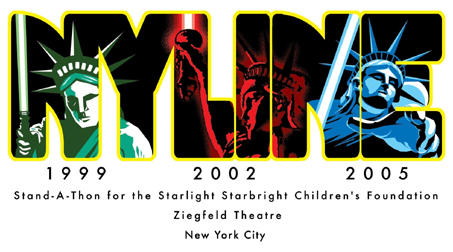

At the heart of Star Wars Celebration III, running from April 21-24 in Indianapolis, will be the huge Fan Fair Exhibit Hall featuring events and displays designed by Star Wars fans especially for the show. Local, regional and web-based fan groups were given the opportunity to apply for free space in the hall, to be able to share their love of Star Wars with other fans from all over the world.
NYLine's Fan Table will be a must-see stop in the Fan Fair Hall. Fans will be able to stare in awe at the one-of-a-kind Liberty Jedi LEGO sculpture created especially for the NYLine eBay auction by brick artist Nathan Sawaya, as well as the renowned street art "graffiti" toy AT-AT by NYLine sponsor and breakbeats master Suckadelic. Our in-house design genius John Green and print guru Dave Creighton have created an incredible banner for our table at Celebration III - here's a sneak peek at their masterpiece!
Cool NYLine collectibles will be available, including two sets of limited-run t-shirts, badges, stickers and collector buttons, with 100 percent of the proceeds benefitting the Starlight Starbright Children's Foundation. Plus fans from around the country and the world will have the opportunity to register for NYLine at Celebration III to come to NY and join us on the sidewalk from April 30 to May 18!